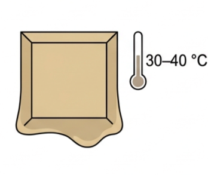
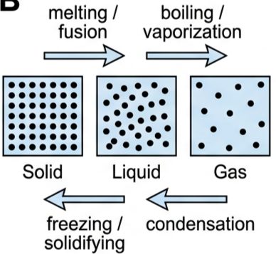
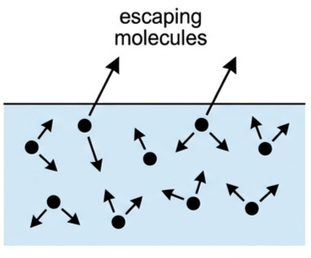
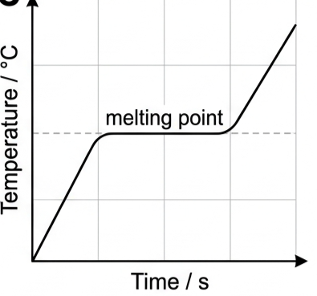
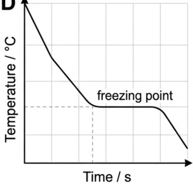
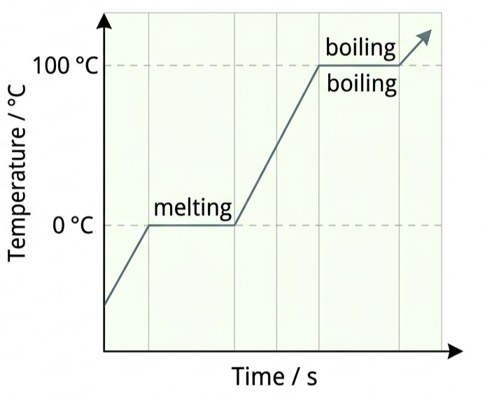
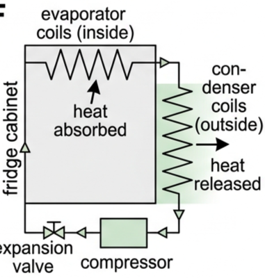

🍫 Hook – the chocolate mystery
You're holding a piece of chocolate. It starts to melt. Your hand feels cooler. But if the chocolate is gaining energy to melt, why does your hand feel colder? And why does the chocolate stay at the same temperature while it melts, even though energy is being transferred into it? Many chocolates melt at around 30–40°C — close to body temperature — which is why they melt in contact with your skin.

🧊 States of matter and phase changes
A phase is a region where all physical and chemical properties are uniform — ice and liquid water are two phases of the same substance.
| Term | Definition | Example |
|---|---|---|
| Melting / fusion | Solid → liquid | Ice → water at 0°C |
| Freezing / solidifying | Liquid → solid | Water → ice at 0°C |
| Boiling | Liquid → gas throughout the liquid, at a precise temperature | Water → steam at 100°C |
| Evaporation | Liquid → gas at the surface, at any temperature below boiling | Puddles drying |
| Condensation | Gas → liquid | Steam → water droplets |
| Vaporization | General term for liquid → gas (boiling or evaporation) | — |

💧 Boiling vs evaporation
| Feature | Evaporation | Boiling |
|---|---|---|
| Temperature | Any temperature below the boiling point | Precise temperature (the boiling point) |
| Location | Only at the surface | Throughout the liquid |
| Energy source | From the liquid itself (cooling effect) | From an external heat source |
| Rate | Slow, depends on surface area | Rapid, vigorous bubbling |
| Pressure dependence | Less dependent on pressure | Highly dependent on pressure |
The cooling effect of evaporation: the most energetic molecules escape from the surface. This reduces the average kinetic energy of the molecules left behind, so the liquid's temperature decreases. Energy must then flow in from the surroundings to restore balance — this is exactly why sweating cools the body, why refrigerators and air conditioners work, and why misting systems cool outdoor spaces.

🌫️ Humidity and fans
Humidity affects how fast evaporation can happen. At 20°C, air can hold at most about 17 g m⁻³ of water vapour; at 30°C, about 30 g m⁻³. Humidity is the actual amount of vapour present as a fraction of that maximum.
| Humidity | Evaporation rate | Cooling effect |
|---|---|---|
| Low | Fast | Good cooling |
| High | Slow | Poor cooling |
| 100% | No net evaporation | No cooling |
🔥 Latent heat — the hidden energy
Latent heat is thermal energy transferred at constant temperature during a phase change. It is "latent" (hidden) because energy is transferred but the temperature doesn't change — the energy goes into the substance's potential energy, rearranging particles, rather than speeding them up.
| Phase change | Energy | Molecular effect |
|---|---|---|
| Melting (solid → liquid) | IN | Some forces overcome, small separation increase |
| Freezing (liquid → solid) | OUT | Forces strengthen, particles arrange |
| Boiling (liquid → gas) | IN | All forces overcome, large separation increase |
| Condensing (gas → liquid) | OUT | Forces restore, particles come together |
\(Q\) is the thermal energy transferred (J), \(m\) is mass (kg), \(L\) is specific latent heat (J kg⁻¹) — either \(L_f\) (fusion: melting/freezing) or \(L_v\) (vaporization: boiling/condensing).
For the same substance, \(L_v > L_f\). Boiling requires overcoming all intermolecular forces and creating large separations (around a 1000× volume increase); melting only requires overcoming some forces with a small separation increase.
| Water | Value / J kg⁻¹ |
|---|---|
| \(L_f\) | \(3.35\times10^{5}\) |
| \(L_v\) | \(2.27\times10^{6}\) (about 6.8× larger) |
📈 Graph mastery – heating and cooling through a phase change
| Graph type | Axes (X, Y) | Shape | What to read |
|---|---|---|---|
| Heating and melting | Time / s · Temperature / °C | Rises, flattens into a plateau at the melting point, rises again | The plateau is where energy is going into breaking bonds, not raising temperature |
| Cooling and freezing | Time / s · Temperature / °C | Falls, flattens into a plateau at the freezing point, falls again | Temperature stays constant during freezing despite energy being removed |


✍️ Worked example 1 – which is easier to boil? (B1.13)
The specific latent heats of vaporization of water and ethanol are \(2.27\times10^{6}\ \text{J kg}^{-1}\) and \(8.55\times10^{5}\ \text{J kg}^{-1}\). State and explain which is "easier" to boil, and calculate the energy needed to turn 50 g of ethanol into gas at 78°C.
\(Q = 0.050\times8.55\times10^{5}\)
\(= 4.3\times10^{4}\ \text{J}\).
✍️ Worked example 2 – ice at 0°C to steam at 100°C
Calculate the total thermal energy needed to convert 40 g of ice at 0°C completely into steam at 100°C. (\(L_f = 3.35\times10^{5}\), \(c_{\text{water}} = 4180\ \text{J kg}^{-1}\text{K}^{-1}\), \(L_v = 2.27\times10^{6}\ \text{J kg}^{-1}\), all in SI units.)
Heat: \(0.040\times4180\times100 = 1.672\times10^{4}\ \text{J}\)
Boil: \(0.040\times2.27\times10^{6} = 9.08\times10^{4}\ \text{J}\)
Total \(= 1.212\times10^{5}\ \text{J}\).

🧊 Real-world: refrigeration and evaporative cooling
Refrigerators and air conditioners both exploit evaporative cooling. A refrigerant evaporates inside the fridge, taking thermal energy from the food compartment; it is then compressed and condensed outside, releasing that energy to the surroundings. Air conditioners work the same way, removing thermal energy from indoor air and releasing it outside. Sweating uses the same mechanism on a smaller scale — evaporation from the skin removes thermal energy from the body — and outdoor misting systems spray fine droplets that evaporate quickly, cooling the surrounding air.

🚀 HL extension – latent heat and weather systems
The same equation that describes melting chocolate also describes the energy driving storms. When water vapour condenses or freezes in the atmosphere, it releases the latent heat it absorbed when it evaporated — energy that powers convection and storm systems.
Challenge: a 24,000 kg cloud of water droplets freezes at 0°C (\(L_f = 3.35\times10^{5}\ \text{J kg}^{-1}\)). Calculate the energy released, and compare it to a typical lightning strike (about \(5\times10^{9}\ \text{J}\)). \(Q = mL_f = 24{,}000\times3.35\times10^{5} = 8.04\times10^{9}\ \text{J}\) — more energy than a lightning strike releases, which is why freezing clouds are a major energy source in storm systems.
⚠️ Trap corner – common mistakes
| Misconception | Correct view |
|---|---|
| "Steam is just hot water" | Steam carries latent heat in addition to thermal energy — that extra energy is released on condensation, which is why steam burns are so severe |
| "Evaporation and boiling are the same" | They differ in temperature range (any T vs a fixed point), location (surface only vs throughout) and mechanism |
| "Temperature always increases when energy is added" | During a phase change, temperature stays constant — the energy changes potential energy, not kinetic energy |
| "Freezing only happens at low temperatures" | The freezing/melting point depends on the substance — chocolate freezes around 30–40°C |
| "Fans cool the air" | Fans increase the rate of evaporation from the skin; they do not directly lower air temperature |
Complete the statements:
✓ Energy supplied \(= Pt = 2250\times180 = 405{,}000\ \text{J}\)
✓ \(L_v = Q/m = 405{,}000/0.158 = 2.56\times10^{6}\ \text{J kg}^{-1}\)
✓ Energy is also lost to the surroundings, so not all of it vaporizes water
✓ This is an overestimate — the calculation attributes more energy to vaporization than actually went into it.
✓ \(Q = 1.6\times10^{3}\ \text{J}\).
✓ Vaporization: all intermolecular forces are overcome; particles move far apart (≈1000× volume increase)
✓ Much more energy is needed to completely separate the particles than to loosen their arrangement.
✓ (b) Mass melted by heater \(= 54.7-16.8 = 37.9\ \text{g} = 0.0379\ \text{kg}\); energy supplied \(= 50\times300 = 15{,}000\ \text{J}\); \(L_f = 15{,}000/0.0379 = 3.96\times10^{5}\ \text{J kg}^{-1}\)
✓ (c) Heat loss from the heater to the surroundings, temperature gradients in the ice, heater not fully immersed, inaccurate mass measurements
✓ (d) Better insulation, a joulemeter for energy, stirring/uniform ice temperature, multiple averaged readings, a larger ice mass to reduce percentage error.
✓ Cooling 100°C→35°C: \(Q = mc\Delta T = 0.00053\times4180\times65 = 144\ \text{J}\)
✓ Total \(= 1203+144 = 1347\ \text{J}\)
✓ Steam releases latent heat on condensation (1203 J) in addition to the cooling energy (144 J); water at 100°C only releases the 144 J — the extra latent heat makes steam burns far more severe.
✓ Freeze water: \(Q_2 = 0.120\times3.35\times10^{5} = 40{,}200\ \text{J}\)
✓ Total \(= 11{,}788+40{,}200 = 51{,}988\ \text{J}\)
✓ \(\approx 5.2\times10^{4}\ \text{J}\).
✓ A lightning strike releases about \(5\times10^{9}\ \text{J}\)
✓ The freezing cloud releases more energy than a lightning strike, illustrating the enormous energy involved in weather systems.
✓ Melt ice at 0°C: \(Q_2 = 0.048\times3.35\times10^{5} = 16{,}080\ \text{J}\)
✓ Total required \(= 857+16{,}080 = 16{,}937\ \text{J}\)
✓ Energy available from container cooling: \(1500\times(23-T_f)\)
✓ Set equal: \(1500(23-T_f) = 16{,}937 \Rightarrow 23-T_f = 11.29\)
✓ \(T_f = 23-11.29 = 11.7\)°C.